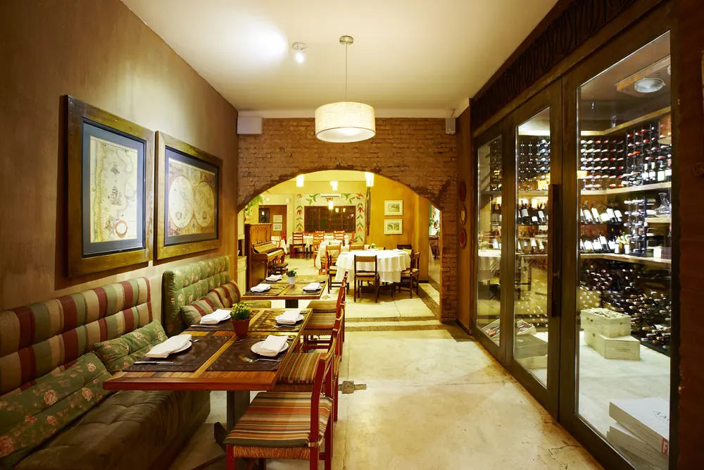
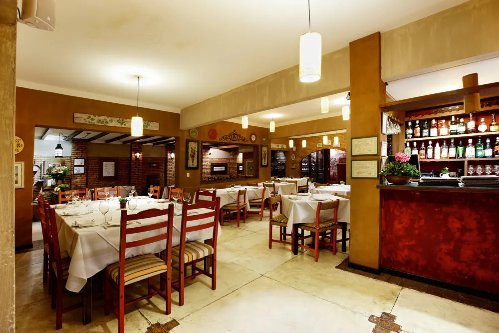
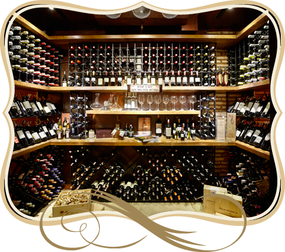

Cucina italiana · São José do Rio Preto
Um convite para
ficar à mesa.
Receitas italianas, atmosfera acolhedora e uma casa criada para transformar encontros em momentos inesquecíveis.
Desde 2002
A Itália que escolheu
Rio Preto como casa.
A Cantinella nasceu das histórias de amigos de infância apaixonados por cozinhar, inventar pratos e experimentar novas receitas.
Desde a concepção do ambiente aos detalhes da mesa, a casa foi pensada para trazer à cidade uma experiência tipicamente italiana.
Conheça a casa ↓A mesa é só o começo.


Vinhos da casa
Uma adega para
acompanhar a noite.
Vinhos nacionais e importados compõem a adega da Cantinella. A casa também apresenta sua seleção de vinho da jarra, em versões tinto e branco.
Falar sobre a adega ↗
Sua celebração
ganha endereço.
A Cantinella realiza eventos para até 30 pessoas. Para conhecer as possibilidades e organizar sua data, fale diretamente com a casa.
Planejar um evento ↗Cantinella Cucina Italiana
Sua próxima mesa
começa aqui.
Terça a quinta, almoço e jantar.
Sexta e sábado, almoço.